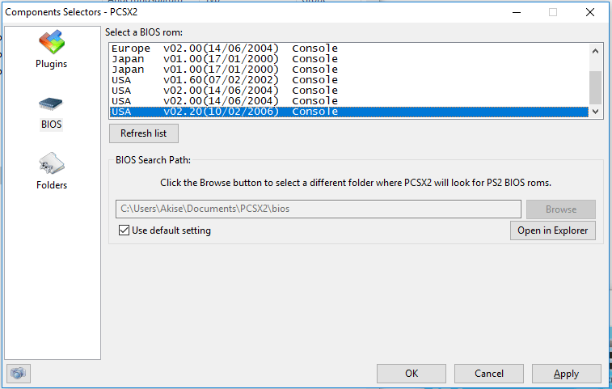
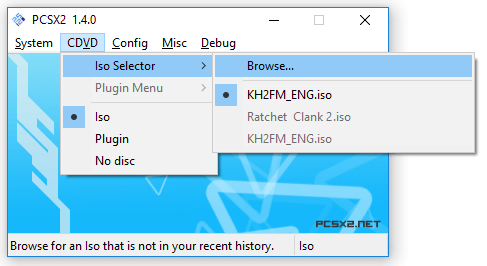
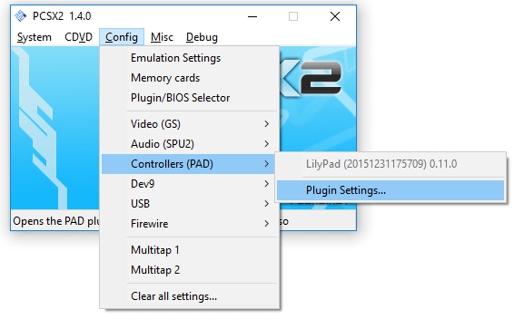
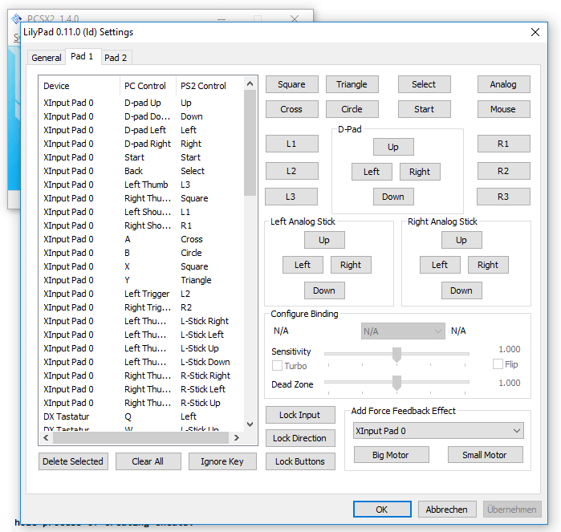
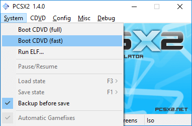

PCSX2 is a powerful tool that lets you emulate PS2 games on Windows. The only downside is it's difficult-to-understand setup. Let's begin with the basics:
Download the newest version of PCSX2 for windows and install it. Click YES if it tells you to upgrade DirectX.
You need the BIOS of a PS2 to emulate it. Either RIP it off your own PS2 or just download it here.
Unpack the BIOS folders / data and copy them into your Documents/PCSX2/bios folder.

Now you need a game to run, so download the japanese Kingdom Hearts 2: Final Mix+. You may have to unpack it after downloading it with WinRar first. The Game itself should be ending with .iso
Now you have to go to CDVD->Select ISO and select the .iso you just downloaded.

The only thing left is to configure your controls and then start the game! To configure the control setup, go to Config->Controllers->Plugin Settings

and then to the first tab at the top named "Pad1". Here you can map PS2 keys to your Keyboard or Controller.

To start a game, select System->Boot CDVD. Boot CDVD (fast) doesn't play the PS2 Intro logo, (full) plays it.
